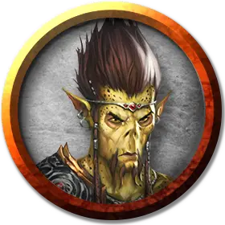

Гитъянки воитель
Githyanki Warrior
Средний Гуманоид (Гит), законно-злой

Класс Доспеха 17 (полулаты)
Хиты 49 (9к8 + 9)
Скорость 30 футов
| мод | спас | ||
|---|---|---|---|
| СИЛ | 15 | +2 | +2 |
| ЛОВ | 14 | +2 | +2 |
| ТЕЛ | 12 | +1 | +3 |
| мод | спас | ||
|---|---|---|---|
| ИНТ | 13 | +1 | +3 |
| МДР | 13 | +1 | +3 |
| ХАР | 10 | +0 | +0 |
Чувства пассивное Восприятие 11
Языки Гитский
Опасность 3 (700 опыта)
Бонус мастерства +2
Особенности
Врождённое колдовство (псионика). Базовой характеристикой гитъянки является Харизма. Он может накладывать следующие заклинания, не нуждаясь ни в каких компонентах:
• Неограниченно: волшебная рука [mage hand] (рука невидима)
• 3/день каждое: необнаружимость [nondetection] (только на себя), прыжок [jump], туманный шаг [misty step]
Действия
Мультиатака. Гитъянки совершает две атаки двуручным мечом.
Двуручный меч. Рукопашная атака оружием: +4 к попаданию, досягаемость 5 футов, одна цель. Попадание: Рубящий урон 9 (2к6 + 2) плюс урон психической энергией 7 (2к6).
Описание
См. дополнительно статью: "Бестиарий: Гиты"